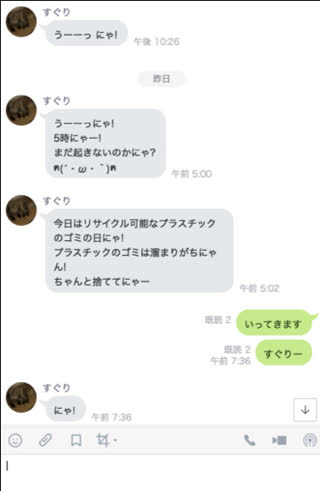

実をいうと私は彼女とすぐりという名のネコと同棲をしています．
人数が多いと排出するゴミの量も多く，少しでもゴミ捨てをサボるとゴミ箱がパンパンになります．
特に，ネコのトイレ掃除で出た排泄物や自炊した際にでる生ゴミを少しでもほっとくと匂いが気になってしまいます．
ゴミ出しは重要ですね．
そんな中，Qiitaを眺めていると良さげな記事(ゴミの日も記念日も何でも通知してくれるLINE BotをGASで作ってみよう)を読み，とても簡単そうだったのでやってみました．
この記事を参考にし，すぐり（猫の名前）という名でBotを作りました．

毎朝ゴミ出しリマインドをしてくれたり，私達のLINEの途中に合いの手を入れてくれます．
愛猫と喋れて彼女はとても喜んでいます．
さて，このようなLINE Botの作り方は，先ほどの記事に書いてあり，基本的に読めば実現できます．
しかし，流れがいまいち分かりづらく時間がかかってしまったので，補足的な内容を以下に記します．
Google Apps Scriptとは
Google Apps Script（通称GAS）を簡単に説明すると，Googleのアカウントさえ持っていれば使用することが可能な，サーバーサイドjavascript環境です．
GmailやGoogle Spread SheetをGASを使ってお手頃に自動化したり，botを作れたりできます．
他のクラウドサービスと違って驚くほど簡単に使用できるので，おすすめです．
ちなみに私はDiscordのbotをGoogle Cloud Engineというクラウドの仮装マシンで動かしているのですが，botのためだけに仮装マシンを借りるのは今では少々オーバースペックだと思うので，早くGASに移行したいと思っています．
GASでLINEbotを作る流れ
GASでLINE botを作るには大まかに，
- LINE botアカウントの準備
- GASを準備
- 実行
です．
その中でも，LINE botアカウントの準備は結構面倒です．
先ほどの記事では，LINE BOTの作り方を世界一わかりやすく解説（１）【アカウント準備編】を参考にしてくださいとあったが，情報が少し古くなっており手間取りました．
LINE botアカウントの準備の流れ
LINE側での作業は，主にDevelopers Consoleでやる様子です．
こちらでの詳細な流れを次に示しました．
- LINE Developers Consoleに入る
- 新規プロバイダーを作る
- チャンネルを作る
- アクセストークンの入手
- Webhook有効化
LINE botを作るには，LINEビジネスアカウントを用意する必要がありそうに見えるが個人のアカウントでも問題ない様子でした．
こちらのリンク(LINE Developers console)
でConsoleにLoginできます．

その後，プロバイダーを作り，チャンネルを作り，Messaging APIの準備をします．
4.5の肯定は，チャンネル基本設定でできます．
この設定画面では，
- 自動応答メッセージ
- 友だち追加時あいさつ
- botのグループトーク参加
など様々な設定ができました．
特にbotのグループトーク参加は，デフォルトでOFFになっているので，
そのままにしていると悲しいことになってしまいます．
特定のトークルームへのプッシュ
ゴミ出し情報を特定のLINEトークルームのみに行うには，トークルームのIDを知る必要があります．
記事では，IDというメッセージが来たら，そのメッセージが送られたトークルームのIDを返信するようにして，トークルームIDを調べていました．
愛猫にオウム返ししてもらう
私は，環境ができた後，記事にあったプログラムをすぐ実行したのですが，何故かwebhookの接続ができなかったため，まずオウム返しbotを作ることにしました．
以下のプログラムのGASで実行します．
すると，何かすぐりにLINEすると，メッセージににゃ!をつけて返信してくれます．
中身を説明すると，GASではHTTPSリクエストが送られてくるとdoPost(e)という関数を実行します．
(参考：GAS公式ドキュメント)
ここではWebhookのPOSTリクエストが送られるので，この中身にある返信用のトークンとアクセストークン，メッセージをJsonに格納し，LINEのAPIにPOSTします．
1
2
3
4
5
6
7
8
9
10
11
12
13
14
15
16
17
18
19
20
21
22
23
24
25
26
27
28
29
30
31
32
| // 「メッセージ送受信設定」のアクセストークン（ロングターム）を記入してください。
var ACCESS_TOKEN = '**********';
function doPost(e) {
var event = JSON.parse(e.postData.contents).events[0];
// ユーザーのメッセージを取得
var userMessage = JSON.parse(e.postData.contents).events[0].message.text;
// 返信するメッセージ
var message = userMessage + 'にゃ!';
// 返信する
replyMessage(event.replyToken, message);
return ContentService.createTextOutput(JSON.stringify({'content': 'post ok'})).setMimeType(ContentService.MimeType.JSON);
}
function replyMessage(token, message) {
// 応答メッセージ用のAPI URL
var url = 'https://api.line.me/v2/bot/message/reply';
UrlFetchApp.fetch(url, {
'headers': {
'Content-Type': 'application/json; charset=UTF-8',
'Authorization': 'Bearer ' + ACCESS_TOKEN,
},
'method': 'post',
'payload': JSON.stringify({
'replyToken': token,
'messages': [{
'type': 'text',
'text': message,
}],
}),
});
}
|
愛猫にIDを教えてもらう
次に特定のトークルームにリプライするため，先ほどのdoPost関数を変更し，tellID関数を設定します．
送られてきた，POSTの中身にIDがあるので，それをメッセージに入れるだけです．
以下のプログラムをGASで実行し，
すぐりに”ID教えて”というとトークルームのIDを教えてくれます．
1
2
3
4
5
6
7
8
9
10
11
12
13
14
15
16
17
18
19
20
21
22
23
24
25
26
27
28
29
30
31
32
33
34
35
36
37
38
39
40
41
42
43
44
45
46
47
48
49
50
51
52
53
54
55
| // 「メッセージ送受信設定」のアクセストークン（ロングターム）を記入してください。
var ACCESS_TOKEN = '**********';
function doPost(e) {
// WebHookで受信した応答用Token
var event = JSON.parse(e.postData.contents).events[0];
// ユーザーのメッセージを取得
var userMessage = JSON.parse(e.postData.contents).events[0].message.text;
// ユーザーからのメッセージが"ID教えて"だったらIDを教える
var message="";
if ( userMessage === "ID教えて" ) {
message = tellID(event);
} else {
message = userMessage + 'にゃ!';
}
// 返信するメッセージ
// 返信する
replyMessage(event.replyToken, message);
return ContentService.createTextOutput(JSON.stringify({'content': 'post ok'})).setMimeType(ContentService.MimeType.JSON);
}
function replyMessage(token, message) {
// 応答メッセージ用のAPI URL
var url = 'https://api.line.me/v2/bot/message/reply';
UrlFetchApp.fetch(url, {
'headers': {
'Content-Type': 'application/json; charset=UTF-8',
'Authorization': 'Bearer ' + ACCESS_TOKEN,
},
'method': 'post',
'payload': JSON.stringify({
'replyToken': token,
'messages': [{
'type': 'text',
'text': message,
}],
}),
});
}
function tellID(event) {
// ID
var userID = event.source.userId;
var talkID = "";
if (event.source.type === "group") {
talkID = event.source.groupId;
} else if (event.source.type === "room") {
talkID = event.source.roomId;
}
var message = "あなたのID: " + userID;
if (talkID != "") {
message += "\nこのチャットのID: " + talkID + "\nだにゃ！";
}
return message;
}
|
ほぼ記事に挙げられていた記事と同じです．
正直何故Webhookが有効にならなかったのかわかりませんが，doPost関数を書き換えると，記事にあったプログラムでも実行できるようになりました．
送られてきたメッセージの中で特定の文字列を探す方法
上のプログラムでは，ユーザーから送られたメッセージが特定の文字列に完全に一致しないといけません．
botを作る際は，メッセージ中に特定の文字列があった場合というものを知りたいと思います．
例えば，”帰る”という文字列が入ったら，”待ってるにゃ!”と言ってくれる猫がいたら嬉しいです．
なので，JavascriptのStringクラスのメンバ関数indexOf()を使うことにしました．
以下のようにdoPost()を書き換えると，すぐりが忠犬ならぬ忠猫になります．
1
2
3
4
5
6
7
8
9
10
11
12
13
14
15
16
| function doPost(e) {
// WebHookで受信した応答用Token
var event = JSON.parse(e.postData.contents).events[0];
// ユーザーのメッセージを取得
var userMessage = JSON.parse(e.postData.contents).events[0].message.text;
// ユーザーからのメッセージが"ID教えて"だったらIDを教える
var message="";
if ( userMessage === "ID教えて" ) {
message = tellID(event);
} else if ( userMessage.indexOf('帰る') != -1) {
message = '待ってるにゃ!';
}
// 返信する
replyMessage(event.replyToken, message);
return ContentService.createTextOutput(JSON.stringify({'content': 'post ok'})).setMimeType(ContentService.MimeType.JSON);
}
|
愛猫に話を聞いてもらう
何かメッセージが飛ぶたびに相づちを打ってもらえると嬉しいです．
ただ，いつも全く同じな相づちはそれっぽくありません．
そこで，Google Spread Sheetに書いた相づちの種類をランダムに返信するようにしました．
randomというsheetを作り，A行に相づちを書き連ねます．

1
2
3
4
5
6
7
8
9
10
11
12
13
14
15
16
17
18
19
20
21
22
23
24
25
| var SHEET_KEY = '**************';
function doPost(e) {
// WebHookで受信した応答用Token
var event = JSON.parse(e.postData.contents).events[0];
// ユーザーのメッセージを取得
var userMessage = JSON.parse(e.postData.contents).events[0].message.text;
// ユーザーからのメッセージが"ID教えて"だったらIDを教える
var message="";
if ( userMessage === "ID教えて" ) {
message = tellID(event);
} else if ( userMessage.indexOf('帰る') != -1) {
message = '待ってるにゃ!';
} else {
var sheet = SpreadsheetApp.openById(SHEET_KEY).getSheetByName('random');
// A1セルから入力されている最終行まで一気に取得
var randomData = sheet.getRange(1, 1, sheet.getLastRow());
// ランダムで候補を選ぶ
var intRandomNum = Math.round(Math.random()*sheet.getLastRow());
message = randomData.getValues()[intRandomNum][0];
}
// 返信する
replyMessage(event.replyToken, message);
return ContentService.createTextOutput(JSON.stringify({'content': 'post ok'})).setMimeType(ContentService.MimeType.JSON);
}
|
このようにすることで，毎回会話にすぐりが登場して可愛いです．
あとがき
ちょっとしたbotを作るだけでも，隣にこんなに喜んでくれる人がいて幸せです．
あとはすぐりに毎朝天気を教えてくたり，買うものリストを覚えていてくれたりすると嬉しいですね．
以上，徒然文を最後まで読んでいただき有難うございました．